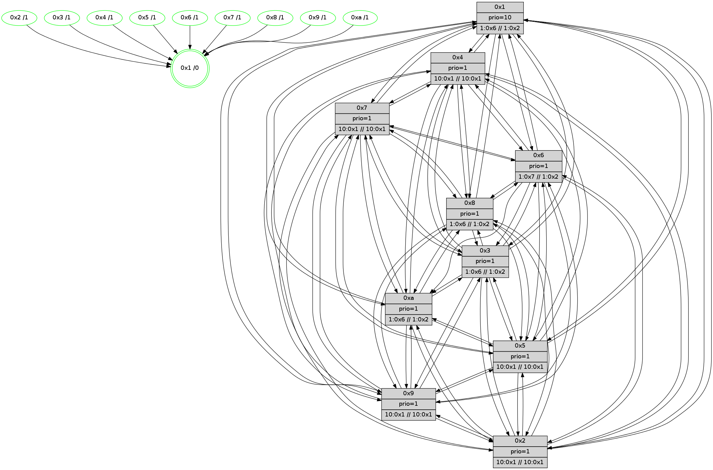

>> << IDX [start] -100 -25 -5 +0 +5 +25 +100 [590.000546932]
 Previous packets
----------------------------------------------------------------------
585.221779 beacon01(faad) #0 coord=01,02,03,04,05,06,07,0a,09,08 cycle=688.0ms assoc
-- color-indic=1 64 aa 7c
585.231762 beacon02(faad) #0 coord=01,02,03,04,05,06,07,0a,09,08 cycle=688.0ms assoc 64 39 4d
585.241761 beacon03(faad) #0 coord=01,02,03,04,05,06,07,0a,09,08 cycle=688.0ms assoc 64 43 00
585.251762 beacon04(faad) #0 coord=01,02,03,04,05,06,07,0a,09,08 cycle=688.0ms assoc 64 34 ea
585.261764 beacon05(faad) #0 coord=01,02,03,04,05,06,07,0a,09,08 cycle=688.0ms assoc 64 4e a7
585.271763 beacon06(faad) #0 coord=01,02,03,04,05,06,07,0a,09,08 cycle=688.0ms assoc 64 c0 70
585.281764 beacon07(faad) #0 coord=01,02,03,04,05,06,07,0a,09,08 cycle=688.0ms assoc 64 ba 3d
585.291768 beacon0a(faad) #0 coord=01,02,03,04,05,06,07,0a,09,08 cycle=688.0ms assoc 64 cb 36
585.301768 beacon09(faad) #0 coord=01,02,03,04,05,06,07,0a,09,08 cycle=688.0ms assoc 64 45 e1
585.311769 beacon08(faad) #0 coord=01,02,03,04,05,06,07,0a,09,08 cycle=688.0ms assoc 64 3f ac
585.323023 [Hello(1): seq=285 sym=4,2,9,5,10,3,8,6,7 sysInfo=coloring-mode-on,ColoringModeRequestCalled stat=4:12,5,1,6/2:11,1,15,6/9:9,10,4,6/5:4,12,15,7/10:1,4,1,5/3:11,8,5,8/8:14,5,5,5/6:3,14,2,3/7:10,6,3,6]
585.326169 [STC(5)->1 #0.33 tree-change,inconsistent-stability,stable,to-color d=1]
585.328118 [Color(5) seq=40 @0:0 prio=1 >10.@1,1.@4,1.@6,1.@7 >>10.@1,1.@2,1.@3]
585.330177 [Color(9) seq=40 @0:0 prio=1 >10.@1,1.@4,1.@6,1.@7 >>10.@1,1.@2,1.@3]
585.332556 [Hello(2): seq=373 sym=4,5,7,6,3,9,8,10,1 sysInfo=hasWarning stat=4:9,3,11,2/5:5,6,8,4/7:12,6,13,3/6:1,13,12,3/3:2,4,5,1/9:13,0,9,1/8:2,8,6,2/10:11,9,7,3/1:3,14,5,0]
585.335700 [STC(3)->1 #0.33 tree-change,inconsistent-stability,stable,to-color d=1]
585.337231 [Hello(6): seq=376 sym=2,3,5,4,7,9,8,10,1 sysInfo=coloring-mode-on,ColoringModeIndicationCalled stat=2:2,3,1,4/3:6,1,14,5/5:6,14,13,7/4:3,13,14,5/7:13,11,12,2/9:4,15,15,6/8:5,14,13,4/10:7,0,0,5/1:2,2,4,0]
585.339711 [Color(4) seq=31 @0:0 prio=1 >10.@1,1.@2,1.@3,1.@5 >>10.@1,1.@4,1.@6]
585.342199 [STC(6)->1 #0.33 tree-change,inconsistent-stability,stable,to-color d=1]
585.344162 [Color(6) seq=56 @0:0 prio=1 >1.@7,1.@8,1.@9,1.@a >>1.@2,1.@3,1.@4]
585.346231 [Color(3) seq=56 @0:0 prio=1 >1.@6,1.@7,1.@8,1.@9 >>1.@2,1.@3,1.@4]
585.348145 [Hello(7): seq=376 sym=2,3,5,6,4,8,9,10,1 sysInfo= stat=2:8,13,0,7/3:0,15,15,7/5:2,12,13,8/6:2,5,0,0/4:8,7,15,5/8:0,2,0,3/9:14,10,15,7/10:2,13,14,5/1:1,15,5,0]
585.350592 [Color(8) seq=56 @0:0 prio=1 >1.@6,1.@7,1.@9,1.@a >>1.@2,1.@3,1.@4]
585.354047 [STC(7)->1 #0.33 tree-change,inconsistent-stability,stable,to-color d=1]
585.357269 [Color(7) seq=44 @0:0 prio=1 >10.@1,1.@4,1.@6,1.@8 >>10.@1,1.@2,1.@3]
585.366750 [Color(10) seq=45 @0:0 prio=1 >1.@6,1.@7,1.@8,1.@9 >>1.@2,1.@3,1.@4]
----------------------------------------------------------------------
586.009910 beacon01(faad) #0 coord=01,02,03,04,05,06,07,0a,09,08 cycle=688.0ms assoc
-- color-indic=1 64 16 79
586.019891 beacon02(faad) #0 coord=01,02,03,04,05,06,07,0a,09,08 cycle=688.0ms assoc 64 85 48
586.029891 beacon03(faad) #0 coord=01,02,03,04,05,06,07,0a,09,08 cycle=688.0ms assoc 64 ff 05
586.039893 beacon04(faad) #0 coord=01,02,03,04,05,06,07,0a,09,08 cycle=688.0ms assoc 64 88 ef
586.049892 beacon05(faad) #0 coord=01,02,03,04,05,06,07,0a,09,08 cycle=688.0ms assoc 64 f2 a2
586.059893 beacon06(faad) #0 coord=01,02,03,04,05,06,07,0a,09,08 cycle=688.0ms assoc 64 7c 75
586.069894 beacon07(faad) #0 coord=01,02,03,04,05,06,07,0a,09,08 cycle=688.0ms assoc 64 06 38
586.079897 beacon0a(faad) #0 coord=01,02,03,04,05,06,07,0a,09,08 cycle=688.0ms assoc 64 77 33
586.089897 beacon09(faad) #0 coord=01,02,03,04,05,06,07,0a,09,08 cycle=688.0ms assoc 64 f9 e4
586.099900 beacon08(faad) #0 coord=01,02,03,04,05,06,07,0a,09,08 cycle=688.0ms assoc 64 83 a9
586.111106 [Hello(5): seq=377 sym=7,6,4,3,1,9,8,10,2 sysInfo= stat=7:10,2,1,3/6:14,12,15,3/4:2,2,10,3/3:1,9,6,2/1:13,1,5,0/9:15,3,11,3/8:0,8,8,3/10:15,10,11,4/2:4,2,11,3]
586.114450 [Hello(3): seq=377 sym=1,7,6,2,4,8,9,10,5 sysInfo=coloring-mode-on,ColoringModeIndicationCalled stat=1:12,0,8,0/7:11,4,10,3/6:1,5,8,4/2:2,13,11,6/4:4,15,11,4/8:0,13,6,0/9:8,15,14,5/10:2,0,7,3/5:6,0,11,5]
586.117296 [Hello(8): seq=320 sym=5,2,3,4,7,6,9,10,1 sysInfo=coloring-mode-on,ColoringModeIndicationCalled stat=5:3,1,10,5/2:12,7,1,0/3:13,10,11,6/4:2,0,13,5/7:5,2,14,4/6:13,12,12,4/9:8,13,13,4/10:4,5,8,5/1:3,0,7,0]
586.120772 [Hello(10): seq=309 sym=6,2,3,8,9,5,7,4,1 sysInfo= stat=6:10,5,12,3/2:12,6,3,0/3:13,9,3,1/8:13,12,12,4/9:10,15,9,3/5:15,1,8,5/7:9,1,11,2/4:12,1,8,6/1:6,11,5,0]
586.123497 [Hello(9): seq=320 sym=5,2,3,4,7,6,8,10,1 sysInfo=hasWarning stat=5:4,2,8,6/2:3,0,14,4/3:6,3,9,4/4:8,15,11,4/7:12,2,14,2/6:4,7,11,3/8:3,1,8,2/10:1,4,10,5/1:4,13,7,0]
586.130722 [Hello(4): seq=377 sym=5,7,6,2,3,9,8,10,1 sysInfo= stat=5:7,6,10,6/7:15,6,13,2/6:3,12,13,4/2:9,15,10,5/3:13,2,4,2/9:8,5,8,3/8:1,0,14,5/10:7,9,11,4/1:9,13,8,0]
586.138438 [Color(2) seq=34 @0:0 prio=1 >10.@1,1.@4,1.@6,1.@7 >>10.@1,1.@2,1.@3]
----------------------------------------------------------------------
586.798040 beacon01(faad) #0 coord=01,02,03,04,05,06,07,0a,09,08 cycle=688.0ms assoc
-- color-indic=1 64 d2 77
586.808023 beacon02(faad) #0 coord=01,02,03,04,05,06,07,0a,09,08 cycle=688.0ms assoc 64 41 46
586.818023 beacon03(faad) #0 coord=01,02,03,04,05,06,07,0a,09,08 cycle=688.0ms assoc 64 3b 0b
586.828022 beacon04(faad) #0 coord=01,02,03,04,05,06,07,0a,09,08 cycle=688.0ms assoc 64 4c e1
586.838024 beacon05(faad) #0 coord=01,02,03,04,05,06,07,0a,09,08 cycle=688.0ms assoc 64 36 ac
586.848022 beacon06(faad) #0 coord=01,02,03,04,05,06,07,0a,09,08 cycle=688.0ms assoc 64 b8 7b
586.858025 beacon07(faad) #0 coord=01,02,03,04,05,06,07,0a,09,08 cycle=688.0ms assoc 64 c2 36
586.868027 beacon0a(faad) #0 coord=01,02,03,04,05,06,07,0a,09,08 cycle=688.0ms assoc 64 b3 3d
586.878028 beacon09(faad) #0 coord=01,02,03,04,05,06,07,0a,09,08 cycle=688.0ms assoc 64 3d ea
586.888029 beacon08(faad) #0 coord=01,02,03,04,05,06,07,0a,09,08 cycle=688.0ms assoc 64 47 a7
586.899576 [Hello(2): seq=374 sym=4,5,7,6,3,9,8,10,1 sysInfo=hasWarning stat=4:9,4,11,2/5:6,6,8,4/7:13,7,14,3/6:2,14,13,3/3:2,5,6,1/9:13,0,9,1/8:2,9,6,2/10:11,10,7,3/1:3,14,5,0]
586.902308 [Color(8) seq=57 @0:0 prio=1 >1.@6,1.@7,1.@9,1.@a >>1.@2,1.@3,1.@4]
586.904457 [Hello(6): seq=377 sym=2,3,5,4,7,9,8,10,1 sysInfo=coloring-mode-on,ColoringModeIndicationCalled stat=2:2,4,1,4/3:7,2,14,5/5:7,14,13,7/4:4,14,14,5/7:14,12,13,2/9:5,15,15,6/8:6,14,13,4/10:8,1,0,5/1:3,2,4,0]
586.907236 [Color(10) seq=46 @0:0 prio=1 >1.@6,1.@7,1.@8,1.@9 >>1.@2,1.@3,1.@4]
586.911205 [Color(4) seq=32 @0:0 prio=1 >10.@1,1.@2,1.@3,1.@5 >>10.@1,1.@4,1.@6]
586.913451 [Hello(1): seq=286 sym=4,2,9,5,10,3,8,6,7 sysInfo=coloring-mode-on,ColoringModeRequestCalled stat=4:13,6,1,6/2:12,2,15,6/9:10,11,4,6/5:5,13,0,7/10:2,5,1,5/3:11,9,6,8/8:15,5,5,5/6:4,15,3,3/7:11,7,4,6]
586.916647 [Color(5) seq=41 @0:0 prio=1 >10.@1,1.@4,1.@6,1.@7 >>10.@1,1.@2,1.@3]
586.918606 [Hello(7): seq=377 sym=2,3,5,6,4,8,9,10,1 sysInfo= stat=2:8,14,0,7/3:1,15,15,7/5:3,12,13,8/6:2,5,0,0/4:9,7,15,5/8:1,3,0,3/9:15,10,15,7/10:3,14,14,5/1:2,15,5,0]
586.924909 [Color(3) seq=57 @0:0 prio=1 >1.@6,1.@7,1.@8,1.@9 >>1.@2,1.@3,1.@4]
586.927575 [Color(7) seq=45 @0:0 prio=1 >10.@1,1.@4,1.@6,1.@8 >>10.@1,1.@2,1.@3]
----------------------------------------------------------------------
587.586171 beacon01(faad) #0 coord=01,02,03,04,05,06,07,0a,09,08 cycle=688.0ms assoc
-- color-indic=1 64 6e 72
587.596154 beacon02(faad) #0 coord=01,02,03,04,05,06,07,0a,09,08 cycle=688.0ms assoc 64 fd 43
587.606154 beacon03(faad) #0 coord=01,02,03,04,05,06,07,0a,09,08 cycle=688.0ms assoc 64 87 0e
587.616154 beacon04(faad) #0 coord=01,02,03,04,05,06,07,0a,09,08 cycle=688.0ms assoc 64 f0 e4
587.626153 beacon05(faad) #0 coord=01,02,03,04,05,06,07,0a,09,08 cycle=688.0ms assoc 64 8a a9
587.636155 beacon06(faad) #0 coord=01,02,03,04,05,06,07,0a,09,08 cycle=688.0ms assoc 64 04 7e
587.646155 beacon07(faad) #0 coord=01,02,03,04,05,06,07,0a,09,08 cycle=688.0ms assoc 64 7e 33
587.656158 beacon0a(faad) #0 coord=01,02,03,04,05,06,07,0a,09,08 cycle=688.0ms assoc 64 0f 38
587.666159 beacon09(faad) #0 coord=01,02,03,04,05,06,07,0a,09,08 cycle=688.0ms assoc 64 81 ef
587.676160 beacon08(faad) #0 coord=01,02,03,04,05,06,07,0a,09,08 cycle=688.0ms assoc 64 fb a2
587.687397 [Hello(10): seq=310 sym=6,2,3,8,9,5,7,4,1 sysInfo= stat=6:10,6,12,3/2:13,7,3,0/3:13,10,3,1/8:13,12,12,4/9:11,15,9,3/5:15,2,8,5/7:10,2,11,2/4:13,2,8,6/1:7,11,5,0]
587.691327 [Hello(3): seq=378 sym=1,7,6,2,4,8,9,10,5 sysInfo=coloring-mode-on,ColoringModeIndicationCalled stat=1:12,0,8,0/7:11,5,10,3/6:1,5,8,4/2:3,14,11,6/4:5,15,11,4/8:1,13,6,0/9:9,15,14,5/10:3,0,7,3/5:6,0,11,5]
587.694886 [Hello(8): seq=321 sym=5,2,3,4,7,6,9,10,1 sysInfo=coloring-mode-on,ColoringModeIndicationCalled stat=5:3,2,10,5/2:13,8,1,0/3:13,11,11,6/4:3,1,13,5/7:6,3,14,4/6:14,13,12,4/9:9,13,13,4/10:5,6,8,5/1:4,0,7,0]
587.697423 [Color(1) seq=58 @0:0 prio=10 >1.@6,1.@7,1.@8,1.@9 >>1.@2,1.@3,1.@4]
587.700588 [Hello(5): seq=378 sym=7,6,4,3,1,9,8,10,2 sysInfo= stat=7:11,3,1,3/6:14,12,15,3/4:3,2,10,3/3:2,10,6,2/1:13,1,5,0/9:0,4,11,3/8:1,8,8,3/10:0,10,11,4/2:5,3,11,3]
587.703547 [Color(2) seq=35 @0:0 prio=1 >10.@1,1.@4,1.@6,1.@7 >>10.@1,1.@2,1.@3]
587.706698 [Hello(9): seq=321 sym=5,2,3,4,7,6,8,10,1 sysInfo=hasWarning stat=5:4,2,8,6/2:4,1,14,4/3:6,4,9,4/4:9,15,11,4/7:12,3,14,2/6:4,7,11,3/8:3,1,8,2/10:1,4,10,5/1:4,13,7,0]
----------------------------------------------------------------------
588.374302 beacon01(faad) #0 coord=01,02,03,04,05,06,07,0a,09,08 cycle=688.0ms assoc
-- color-indic=1 64 5a 6a
588.384285 beacon02(faad) #0 coord=01,02,03,04,05,06,07,0a,09,08 cycle=688.0ms assoc 64 c9 5b
588.394285 beacon03(faad) #0 coord=01,02,03,04,05,06,07,0a,09,08 cycle=688.0ms assoc 64 b3 16
588.404284 beacon04(faad) #0 coord=01,02,03,04,05,06,07,0a,09,08 cycle=688.0ms assoc 64 c4 fc
588.414286 beacon05(faad) #0 coord=01,02,03,04,05,06,07,0a,09,08 cycle=688.0ms assoc 64 be b1
588.424285 beacon06(faad) #0 coord=01,02,03,04,05,06,07,0a,09,08 cycle=688.0ms assoc 64 30 66
588.444291 beacon0a(faad) #0 coord=01,02,03,04,05,06,07,0a,09,08 cycle=688.0ms assoc 64 3b 20
588.454290 beacon09(faad) #0 coord=01,02,03,04,05,06,07,0a,09,08 cycle=688.0ms assoc 64 b5 f7
588.464290 beacon08(faad) #0 coord=01,02,03,04,05,06,07,0a,09,08 cycle=688.0ms assoc 64 cf ba
588.476459 [Hello(2): seq=375 sym=4,5,7,6,3,9,8,10,1 sysInfo=hasWarning stat=4:9,5,11,2/5:6,7,8,4/7:14,8,14,3/6:3,14,13,3/3:2,6,6,1/9:14,0,9,1/8:2,10,6,2/10:12,11,7,3/1:4,14,5,0]
588.479194 [Hello(7): seq=378 sym=2,3,5,6,4,8,9,10,1 sysInfo= stat=2:9,15,0,7/3:2,15,15,7/5:4,12,13,8/6:2,5,0,0/4:9,7,15,5/8:2,3,0,3/9:0,10,15,7/10:4,14,14,5/1:2,0,5,0]
588.482187 [Hello(6): seq=378 sym=2,3,5,4,7,9,8,10,1 sysInfo=coloring-mode-on,ColoringModeIndicationCalled stat=2:3,5,1,4/3:8,3,14,5/5:8,14,13,7/4:4,14,14,5/7:14,13,13,2/9:6,15,15,6/8:7,14,13,4/10:9,1,0,5/1:3,3,4,0]
588.484902 [Color(10) seq=47 @0:0 prio=1 >1.@6,1.@7,1.@8,1.@9 >>1.@2,1.@3,1.@4]
588.487570 [Color(7) seq=46 @0:0 prio=1 >10.@1,1.@4,1.@6,1.@8 >>10.@1,1.@2,1.@3]
588.489493 [Color(9) seq=42 @0:0 prio=1 >10.@1,1.@4,1.@6,1.@7 >>10.@1,1.@2,1.@3]
588.491440 [Hello(1): seq=287 sym=4,2,9,5,10,3,8,6,7 sysInfo=coloring-mode-on,ColoringModeRequestCalled stat=4:13,6,1,6/2:12,3,15,6/9:11,11,4,6/5:6,14,0,7/10:3,5,1,5/3:11,10,6,8/8:15,5,5,5/6:4,0,3,3/7:12,8,4,6]
588.494907 [STC(1) #0.34 tree-change,inconsistent-stability,stable,to-color d=0]
588.496743 [Color(5) seq=42 @0:0 prio=1 >10.@1,1.@4,1.@6,1.@7 >>10.@1,1.@2,1.@3]
588.498657 [Color(4) seq=33 @0:0 prio=1 >10.@1,1.@2,1.@3,1.@5 >>10.@1,1.@4,1.@6]
588.501699 [Color(8) seq=58 @0:0 prio=1 >1.@6,1.@7,1.@9,1.@a >>1.@2,1.@3,1.@4]
588.507549 [Color(3) seq=58 @0:0 prio=1 >1.@6,1.@7,1.@8,1.@9 >>1.@2,1.@3,1.@4]
588.511938 [Color(6) seq=58 @0:0 prio=1 >1.@7,1.@8,1.@9,1.@a >>1.@2,1.@3,1.@4]
----------------------------------------------------------------------
589.162433 beacon01(faad) #0 coord=01,02,03,04,05,06,07,0a,09,08 cycle=688.0ms assoc
-- color-indic=1 64 e6 6f
589.172416 beacon02(faad) #0 coord=01,02,03,04,05,06,07,0a,09,08 cycle=688.0ms assoc 64 75 5e
589.182416 beacon03(faad) #0 coord=01,02,03,04,05,06,07,0a,09,08 cycle=688.0ms assoc 64 0f 13
589.192415 beacon04(faad) #0 coord=01,02,03,04,05,06,07,0a,09,08 cycle=688.0ms assoc 64 78 f9
589.202416 beacon05(faad) #0 coord=01,02,03,04,05,06,07,0a,09,08 cycle=688.0ms assoc 64 02 b4
589.212416 beacon06(faad) #0 coord=01,02,03,04,05,06,07,0a,09,08 cycle=688.0ms assoc 64 8c 63
589.222417 beacon07(faad) #0 coord=01,02,03,04,05,06,07,0a,09,08 cycle=688.0ms assoc 64 f6 2e
589.232421 beacon0a(faad) #0 coord=01,02,03,04,05,06,07,0a,09,08 cycle=688.0ms assoc 64 87 25
589.242421 beacon09(faad) #0 coord=01,02,03,04,05,06,07,0a,09,08 cycle=688.0ms assoc 64 09 f2
589.252422 beacon08(faad) #0 coord=01,02,03,04,05,06,07,0a,09,08 cycle=688.0ms assoc 64 73 bf
589.263657 [Hello(8): seq=322 sym=5,2,3,4,7,6,9,10,1 sysInfo=coloring-mode-on,ColoringModeIndicationCalled stat=5:4,2,10,5/2:14,9,1,0/3:13,12,11,6/4:3,1,13,5/7:6,3,14,4/6:14,14,12,4/9:10,13,13,4/10:5,6,8,5/1:4,1,7,0]
589.266380 [Color(1) seq=59 @0:0 prio=10 >1.@6,1.@7,1.@8,1.@9 >>1.@2,1.@3,1.@4]
589.268869 [STC(2)->1 #0.34 tree-change,inconsistent-stability,stable,to-color d=1]
589.270508 [Hello(4): seq=379 sym=5,7,6,2,3,9,8,10,1 sysInfo= stat=5:8,7,10,6/7:0,7,13,2/6:3,13,13,4/2:11,1,10,5/3:13,4,4,2/9:9,6,8,3/8:2,1,14,5/10:7,9,11,4/1:10,14,8,0]
589.273695 [STC(7)->1 #0.34 tree-change,inconsistent-stability,stable,to-color d=1]
589.275959 [TreeStatus(7)-.->1 #0.34 tree-change,inconsistent-stability,stable child=1]
589.279447 [STC(9)->1 #0.34 tree-change,inconsistent-stability,stable,to-color d=1]
589.281639 [Hello(5): seq=379 sym=7,6,4,3,1,9,8,10,2 sysInfo= stat=7:11,3,1,3/6:14,13,15,3/4:3,3,10,3/3:2,11,6,2/1:13,1,5,0/9:1,4,11,3/8:1,9,8,3/10:0,10,11,4/2:6,4,11,3]
589.284516 [Hello(3): seq=379 sym=1,7,6,2,4,8,9,10,5 sysInfo=coloring-mode-on,ColoringModeIndicationCalled stat=1:12,1,8,0/7:11,5,10,3/6:1,6,8,4/2:4,15,11,6/4:5,15,11,4/8:2,13,6,0/9:10,15,14,5/10:3,0,7,3/5:7,0,11,5]
589.291220 [Color(2) seq=36 @0:0 prio=1 >10.@1,1.@4,1.@6,1.@7 >>10.@1,1.@2,1.@3]
589.295323 [Hello(10): seq=311 sym=2,3,8,9,5,7,4,1 sysInfo= stat=2:14,8,3,0/3:14,11,3,1/8:14,13,12,4/9:12,0,9,3/5:0,3,8,5/7:10,3,11,2/4:13,3,8,6/1:8,12,6,0]
589.298026 [STC(10)->1 #0.34 tree-change,inconsistent-stability,stable,to-color d=1]
----------------------------------------------------------------------
589.950563 beacon01(faad) #0 coord=01,02,03,04,05,06,07,0a,09,08 cycle=688.0ms assoc
-- color-indic=1 64 22 61
589.960546 beacon02(faad) #0 coord=01,02,03,04,05,06,07,0a,09,08 cycle=688.0ms assoc 64 b1 50
589.970545 beacon03(faad) #0 coord=01,02,03,04,05,06,07,0a,09,08 cycle=688.0ms assoc 64 cb 1d
589.980545 beacon04(faad) #0 coord=01,02,03,04,05,06,07,0a,09,08 cycle=688.0ms assoc 64 bc f7
589.990545 beacon05(faad) #0 coord=01,02,03,04,05,06,07,0a,09,08 cycle=688.0ms assoc 64 c6 ba